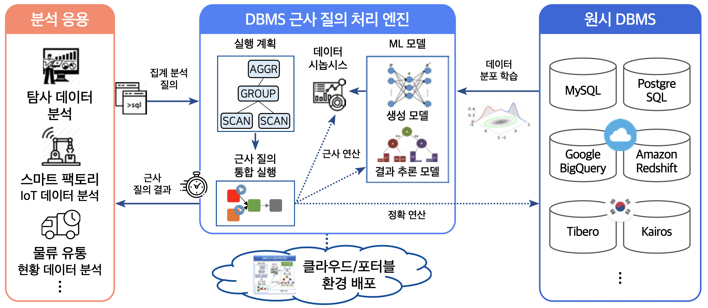

개요
TrainDB란?
TrainDB는 머신 러닝 기반으로 정확한 분석 결과에 준하는 근사 결과를 다양한 호스팅 환경에서 고속 제공하기 위한 탐사 데이터 분석 지원 DBMS 근사 질의 처리 엔진이다.

TrainDB의 특징은 다음과 같다.
- ML 모델을 학습한 이후에는 원시 데이터에 접근하지 않고 근사 질의 결과 제공
- Kubeflow 기반 클라우드 머신 러닝 서비스와 연동하여 원격 ML 모델 학습/실행 가능
- 다양한 DBMS를 원시 DBMS로 연동하여 데이터 분석 질의 수행
TrainDB 주요 연구개발 기술
- TrainDB: ML 모델 기반 근사 질의 처리 엔진
- SQL 기반 근사 질의 언어 확장
- ML 모델로 합성한 시놉시스 데이터를 활용하는 근사 질의 처리 기술
- ML 모델로 근사 집계 결과를 추론하여 제공하는 근사 질의 처리 기술
- 국내외 상용 DBMS 및 클라우드 DBMS를 지원하는 확장형 데이터 소스 연동
- 근사 질의 지원 ML 모델 라이브러리
- 시놉시스 생성 ML 모델 + 근사 결과 추론 ML 모델
- 시놉시스 생성 ML 모델: GAN 기반 모델(TableGAN, OCT-GAN 등), 스코어 기반 생성 모델 등
- 근사 결과 추론 ML 모델: 혼합 밀도 네트워크(MDN), 관계형 합-곱 네트워크(RSPN) 등
- 근사 결과의 오차를 추정하기 위한 근사 질의 결과 평가 기술
- 원시 데이터 업데이트를 반영하기 위한 연속 학습 기술
- 시놉시스 생성 ML 모델 + 근사 결과 추론 ML 모델
- 클라우드 ML 모델 라이브러리 제공 서비스
- 원격 GPU 서버에서 ML 모델을 학습/제공하기 위한 프레임워크
- 클라우드에서 작동 가능한 Kubeflow 기반 ML 모델 등록/학습/실행 기능 지원
- TrainDB 연동 시각적 탐사 데이터 분석 지원 도구
- 탐사 데이터 분석 지원 근사 질의 처리 결과 시각화 기술
- 다각적 데이터 분석을 위한 근사 질의 활용 시각적 OLAP 분석 지원 기술